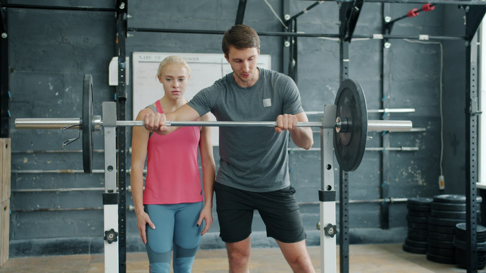

Tu débutes
Tu n'as jamais touché une barre, ou tu tournes en rond sur les machines. On construit la technique d'abord, la charge ensuite. En trois mois tu sais t'entraîner seul.
Coaching individuel en force et musculation. Un programme écrit pour ton niveau, des charges qui montent semaine après semaine, et quelqu'un qui corrige ta technique à chaque série.
Je ne prends pas tout le monde. Ces trois profils, ce sont ceux avec qui les résultats sont nets et rapides.
Tu n'as jamais touché une barre, ou tu tournes en rond sur les machines. On construit la technique d'abord, la charge ensuite. En trois mois tu sais t'entraîner seul.
Deux ans d'entraînement et les mêmes charges depuis six mois. Le problème n'est presque jamais l'effort. C'est la programmation, la récupération, ou un défaut technique que personne ne t'a montré.
Après une blessure, une opération ou deux ans d'arrêt. On repart d'un bilan de mobilité honnête et d'une charge basse, sans jamais forcer sur ce qui fait mal.
Tout est écrit avant d'entrer dans la salle. Tu sais quoi faire, à quelle charge, et pourquoi.

75 minutes. Mobilité articulaire, historique de blessures, charges de départ testées sur les cinq mouvements de base. On repart avec des chiffres, pas des impressions. C'est offert et sans engagement.
Un cycle de quatre à six semaines, écrit noir sur blanc : séries, répétitions, charges, temps de repos. Tu reçois le document avant la première séance et tu peux le suivre même les jours où je ne suis pas là.
Une heure, en individuel. Je corrige la position, je charge la barre, je décide quand on monte et quand on lève le pied. Filmée au besoin pour que tu voies ce que je vois.
Toutes les quatre semaines, on reprend les chiffres ensemble. Ce qui a progressé, ce qui bloque, ce qu'on change pour le cycle suivant. Un programme qui ne bouge jamais est un programme qui a cessé de marcher.
Tous incluent le bilan, le programme écrit et le suivi entre les séances. La différence, c'est le rythme.
Trois personnes suivies à l'atelier, avec leurs charges de départ et d'arrivée. Prénoms modifiés, chiffres réels.
J'avais un programme trouvé en ligne et zéro progression. En huit mois j'ai pris cinquante kilos au squat sans jamais me blesser.Thomas, 34 ans
Je n'arrivais même pas à me suspendre plus de dix secondes. On a construit le dos pendant quatre mois avant d'essayer la première.Sonia, 29 ans
Après ma hernie discale, je pensais ne plus jamais soulever. On a repris à la barre à vide, très lentement. Aujourd'hui je tire quatre-vingts kilos sans douleur.Karim, 41 ans
Neuf ans en salle, dont six en coaching individuel. J'ai commencé par le rugby, puis une épaule en vrac m'a appris que la charge ne sert à rien sans technique. C'est devenu mon métier.
Je travaille avec des gens qui ont un travail, une famille et trois heures par semaine à consacrer à l'entraînement. Mon rôle est de faire en sorte que ces trois heures comptent.
120 m² privés rue des Bourguignons. Trois racks, deux plateformes, des barres olympiques et rien d'inutile. Pas de file d'attente, pas de musique à fond, pas de miroir partout.
75 minutes pour mesurer où tu en es et repartir avec un plan clair. Sans engagement, et sans discours commercial.
Réserver mon créneau →